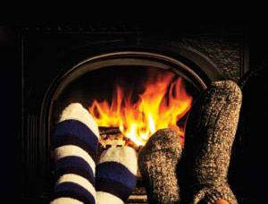
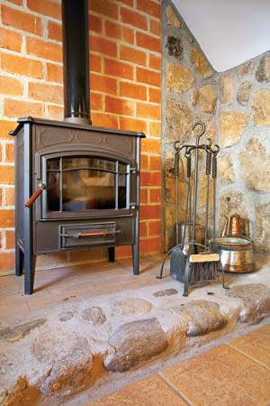
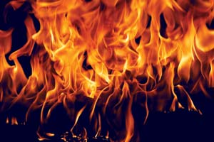
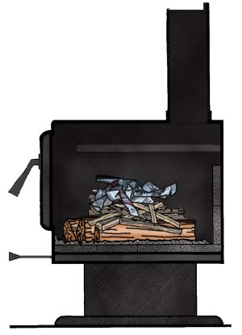
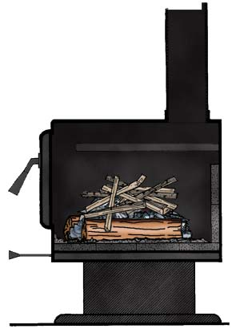
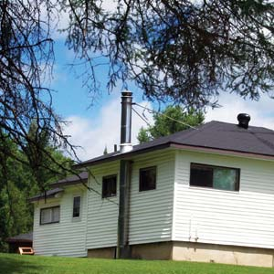
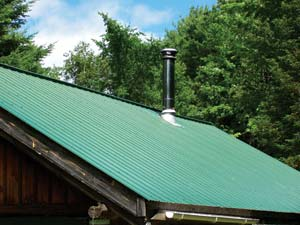

Considering the amount of work involved in full-time wood heating, it just makes sense to burn efficient fires. The payoff is lower cost if you buy your wood and less work if you process your own. When you make smoky fires a thing of the past, you’ll never again worry about flammable creosote causing chimney fires, and you’ll need to sweep the chimney less often. The door glass of your stove or fireplace will stay clear longer, and there will be less chance of smoke roll-out when you open the loading door.
Let’s see: lower cost, less worry, less maintenance and better indoor air quality. Do those advantages make it worth your time to try out some new wood heating skills? I thought so.
The secret to high efficiency wood heating is to pay attention to the smoke. When a piece of firewood is heated, it begins to smoke. The smoke is made up of sticky tar droplets and some combustible gases. If a piece of wood were heated and allowed to smoke until only charcoal remained, more than half of its energy content would be gone - up in smoke, you might say. It is important to burn the smoke because any that escapes from the firebox unburned is wasted fuel that will stick in the chimney as creosote or be released as air pollution. Wood smoke is not a normal byproduct of wood combustion, it is waste. Visible smoke at the top of a chimney is always a sign that energy is being wasted.
Starting a wood fire can be a frustrating experience, and when a fire fails to catch it can even be embarrassing if anyone is watching. But, by using the right techniques and materials, you can have complete confidence that every fire you light will take off immediately and burn reliably.
First, consider a key rule that applies to all wood burning: The wood must be dry. No fire will light and burn reliably if the wood is damp. By dry, I mean that the wood’s moisture content must be less than 20 percent.
Is the wood dry enough to burn? Here are several ways you can tell:
The old way to light a wood fire is to bunch up some newspaper, place some finely split kindling on it, put some bigger pieces on that and light the paper. This “bottom-up” approach can work provided enough paper and fine kindling are used. However, this method has two serious drawbacks. First, as the paper burns the pile will collapse and the fire might smother itself. Second, you have to keep opening the stove door to add more wood until you have a respectable fire. I don’t recommend this method because it is too smoky, labor intensive and messy.
Here are three ways to light a fire that I think work better:
No matter which method you choose, as you light the fire, you should open the air control completely. If the fire struggles, either because the stove has a restrictive air control or because the chimney and flue pipe arrangement is less than ideal, you can leave the door open a crack until the fire catches. Don’t leave the stove unattended with the door unlatched because the fire could get out of control.
The kindling fire should accomplish a few goals. It should heat up the chimney to produce strong, stable draft. It should heat up the brick and steel of the firebox to create an environment for clean burning fire. And it should heat the pieces of fuel until a thick layer of glowing char forms. To achieve these goals, leave the air control fully open until the firebox is full of flame and a charcoal layer forms on the wood. It is best to turn the air down in a couple of stages so the fire has a chance to recover from each reduction. If the fire loses most of its flame when you turn down the air control, open it again until the fire recovers before trying again.
After you have started the fire, here are some strategies you can use to keep it burning as efficiently as possible.
Burn in cycles. Wood fires burn best in cycles, so it’s not a good idea to add a log every hour to attempt to produce an even heat output. The trouble with that approach is that a single log will not burn cleanly because the firebox cools off too much and flaming combustion cannot be sustained. Instead, you need to add at least three pieces - and preferably more - each time you load so that the heat from one log burning can ignite and sustain the flames on the next log, and so on.
Another thing to consider is that if you have thermal mass built into the area near the heater (dense building materials such as concrete, brick or stone) these materials will absorb some of the heat from the start of a heating cycle and release it later as the fires subsides. Thermal mass and cyclical firing work together nicely.
Burn hot, bright fires. Your fires should actively flame until the wood is reduced to charcoal. If there are no flames, half the wood is being wasted as smoke. In mild weather, you can build brightly flaming fires that don’t overheat the house by splitting your firewood finely and using three or more pieces each time you load.
Before loading, rake your coal bed. The live coals left from the previous load are used to ignite the next. To do this, the main flow of combustion air must reach the charcoal first to make it burn hot, and then reach the new wood pieces. Therefore, rake the coals to where the combustion air first reaches the fire. For most stoves, fireplaces and furnaces, this is just inside the loading door. Place the new pieces on and behind the glowing charcoal. Place the smallest, driest piece of the load directly on the charcoal to act as the igniter.
Everyone who heats with wood struggles with the problem of overheating the house, especially during milder weather in spring and fall. Many people reduce heat output by turning down the air control, but this approach wastes fuel because you’re not allowing the fire to burn efficiently. That means smoke is released unburned while creating a lot of creosote and air pollution. Instead, consider these five different ways to control heat output. Use as many of these techniques as you can.
Some people assume that wood heating is simple and that the skills needed to do it well come naturally. That has not been my experience. I’ve been improving my wood heating skills steadily for more than 30 years and continue to learn new things. If you try some of the techniques suggested here, you’ll see good results almost immediately, and if you practice you’ll get better at it. Wood heating is important enough to be worth doing well.
A few simple tools can make life with wood heating more convenient and pleasant. One worthwhile accessory is a sturdy wood box to hold enough fuel for a day or two of heating.
Another necessity is a good tool set for managing the fire. Tool sets for woodstoves need only three things: a rake, a shovel and a brush. The rake is just a steel rod with a small steel plate (about 1 1⁄2 inches by 3 1⁄2 inches) welded to the end. Tools for heaters tend to be shorter and more robust than fireplace tool sets.
It’s also handy to have a pair of hearth gloves for protecting your hands while raking large coal beds. Hearth gloves are thick leather with a lining and are available at hearth stores or welding equipment stores.
Part of my work over the past 30 years has been to search for ways to squeeze more efficiency from wood heating systems. In addition to the day-to-day practices of heating with wood that are discussed in this article, you should also carefully consider the system design to be sure you’re getting the best performance possible.
|
 CORBIS/G. BOWATER Why not heat your home with a woodstove? Wood is a renewable fuel, and it’s often cheap and local, too. |
 BROKER/FOTOLIA It’s a good idea to take advantage of thermal mass by placing your woodstove near dense building materials such as bricks, stone or concrete. These materials slowly absorb and then release heat. |
 ISTOCKPHOTO/SELAHATTIN BAYRAM There’s more than one way to build a fire, but not all fires are equally efficient. It’s worth taking some time to learn how to build more efficient fires: It makes wood heating more convenient, keeps your home more comfortable, and if you’re buying firewood, it can save you money, too. |
|
 NATE SKOW In the article, the author describes several methods for building fires. This is the top-down approach, the author’s favorite method for building fires because it produces little smoke. Just place three or four split logs on the firebox floor. Place six or eight pieces of medium kindling across them. Then put 10 or so pieces of fine kindling across the heavier kindling. Now take four or five full sheets of newspaper and roll each one up corner-to-corner and tie a sloppy knot in it. Place the knots on top of the fine kindling. Light the paper and watch as the fire burns down through the light kindling, the heavy kindling and into the bottom logs. |
 NATE SKOW Another reliable method for starting fires is to begin with two parallel logs. To build a fire this way, just place two split logs in the firebox and put some twisted newspaper between them. Add some fine kindling - 1 inch square or less - on the newspaper and more kindling of various sizes across the two logs. |
 JOHN GULLAND To get the most out of your woodstove, you’ll also want to carefully consider where you place the chimney. A chimney installed outside the house causes sluggish fires. |
|
 JOHN GULLAND A straight-up chimney installation is a much better choice for efficient fires. |
|
|